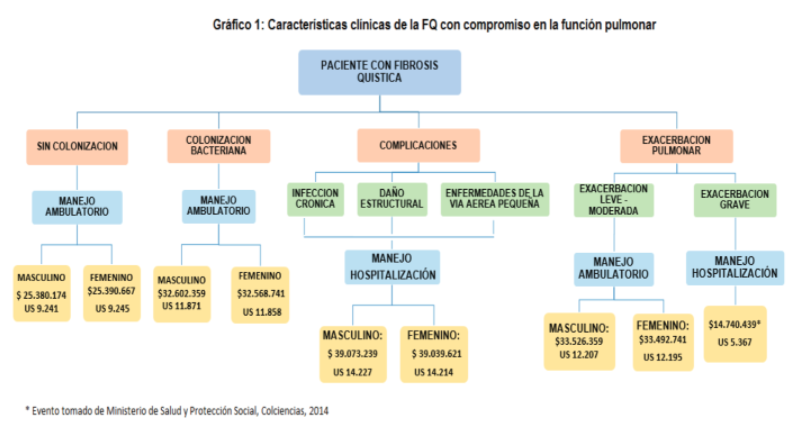

Información
Según la OMS, cada año 150 millones de personas incurren en gastos sanitarios catastróficos, de los cuales 100 millones terminan siendo pobres ya que gastan más que sus ganancias. [ 1]
Las enfermedades catastróficas: son aquellas que tienen baja probabilidad de ocurrencia y alto costo de tratamiento.
La fibrosis quística es considerada una enfermedad catastrófica (EC), ya que tiene baja posibilidad de ocurrencia y alto costo de tratamiento.
El costo de la enfermedad depende de la gravedad y de la edad del paciente debido a que los costos aumentan por estancias hospitalarias frecuentes y prolongadas además de los medicamentos que se requieren principalmente por la progresión de la enfermedad pulmonar. [2 ]
Se tiene en cuenta que esta enfermedad afecta a distintos órganos, directamente al pulmón, lo que lleva al paciente a presentar diferentes características clínicas como se observa en el gráfico 1. [ 3]

Según Walter Rosales (CEFIP-FCE-UNLP), el tratamiento de la fibrosis quística podría costar 300 mil dólares anuales por paciente. Además, estima que al año los costos totales de atención médica para el tratamiento de la fibrosis quística son hasta 22 veces más costosos que el de otras enfermedades crónicas [4]
En un estudio realizado en los Países Bajos, para 1996 el costo de la enfermedad estaba alrededor de $ US 16.300 por paciente por año. El 42% del costo total se atribuía a hospitalizaciones, el 37% al tratamiento farmacoterapéutico y el 20% en otros cuidados.
Para el año 2003 el costo total anual por paciente ascendió a 27.570,56 USD, el 41% correspondía hospitalizaciones, el 59% restante correspondía a la atención ambulatoria y de este porcentaje el 47% de los costos se debía al tratamiento con fármacos. [5]
Un estudio realizado en Francia evaluó costos médicos directos entre pacientes de diferentes edades, se pudo observar que el costo promedio total de la enfermedad por paciente al año es de 13.157 euros para los pacientes pediátricos y 23.968 euros para adultos. Esto se debe a que los adultos demandan de mayor hospitalizaciones y dispositivos médicos. [5]
Pero, por otra parte, los pacientes adultos con FQ alrededor del 10% requieren un cuidador, y en estos casos el cuidador era informal. A diferencia de la población pediátrica, el 88.9 % de la población tenía un cuidador en casa siendo este informal, además el 17.1 % requirió apoyo personalizado en el colegio. La cifra de estos costos oscilan entre 4.827 € que equivale a 23405.28 soles.
Referencias
[1] Unidas, N., 2019. Cien millones de personas se arruinan cada año por los gastos médicos . [online] Noticias ONU. Disponible en:https://news.un.org/es/story/2019/02/1451561 [2] Suasnabar Dávila, J., 2018. Factores asociados a prolongación de estancia hospitalaria en pacientes postoperados en el servicio de cirugia de la Clinica Good Hope, en el año 2016 . [ebook] Lima, p.Ricardo Palma. Disponible en: http://repositorio.urp.edu.pe/bitstream/handle/URP/1257/162%20SUASNABAR%20D%C3%81VILA.pdf?sequence=1&isAllowed=y [3] G., S., J, K. y N, J., 2016. COSTOS MEDICOS DIRECTOS EN TRATAMIENTO DE FIBROSIS QUISTICA CON COMPROMISO EN LA FUNCIÓN PULMONAR EN POBLACIÓN COMPRENDIDA ENTRE 5 Y 18 AÑOS . [en línea] Revistas.udca.edu.co. Disponible en: https://revistas.udca.edu.co/index.php/rcdi/article/view/487 [4] Rosales, W., Garriga, M. y Mangiacone, N., 2020. LO QUE SE PENSÓ SOBRE Y ESCRIBIÓ POLÍTICAS PÚBLICAS EN 2020 . [ebook] La plata - Argentina. Disponible en: http://sedici.unlp.edu.ar/bitstream/handle/10915/121127/Documento_completo.pdf?sequence=1#page=165 [5] Buitrago Guevara, S. y Riaño Jimenez, K., 2021. COSTOS MEDICOS DIRECTOS DEL TRATAMIENTO DE FIBROSIS QUISTICA CON COMPROMISO EN LA FUNCIÓN PULMONAR EN POBLACIÓN COMPRENDIDA ENTRE 5 Y 18 AÑOS. . [ebook] Bogotá - Colombia. Disponible en: https://repository.udca.edu.co/bitstream/handle/11158/557/COSTOS%20MEDICOS%20DIRECTOS%20DEL%20TRATAMIENTO%20DE%20FQ%20CON%20COMPROMISO%20EN%20LA%20FUNCION%20PULMONAR. pdf? sequence = 1 & isAllowed = y [6] Andrade E, Díaz J. Costo-efectividad de la prueba de secuenciación del gen CFTR para portadores asintomáticos en la población colombiana. biomedica [Internet]. 15 de junio de 2020 [citado 12 de septiembre de 2021];40(2):283-95. Disponible en: https://revistabiomedica.org/index.php/biomedica/article/view/4816 [7] Andrade-Cerquera Ernesto, Díaz-Rojas Jorge Augusto. Revisión sistemática de estudios de costo-efectividad del test de portadores para fibrosis quística. rev.fac.med. [Internet]. 2016 Dic [citado 2021 Sep 12] ; 64( 4 ): 671-677. Disponible en: http://www.scielo.org.co/scielo.php?script=sci_arttext&pid=S0120-00112016000400671&lng=es. Disponible en: https://doi.org/10.15446/revfacmed.v64n4.54489.